این دفترچه هر بخش سامانه را با تصویر واقعی، به زبان ساده، توضیح میدهد: چه چیزی است، چطور استفاده میشود، و قانونش چیست.
هر فصل مستقل است؛ لازم نیست از اول بخوانید. مستقیم بروید سراغ بخشی که با آن کار دارید.
نسخهی ۱ · شهریور ۱۴۰۵ · بخش «قطعات» هنوز فعال نشده و در این نسخه نیامده است.
فهرست
۱ورود و منوی سامانه
۲داشبورد
۳قیمت روز خودروها
۴اطلاعیهها و اخطارها
۵حواله — استعلام و نمایش مشخصات
۶حواله — ثبت آگهی و مدیریت آن
۷خودرو — استعلام
۸خودرو — ثبت آگهی فروش و وضعیت بدنه
۹خودرو — درخواست خرید و خودروهای من
۱۰ثبتنامی
۱۱تنظیمات حساب و اشتراک
۱۲زیرنمایندگیها
۱۳پشتیبانی
۱۴قوانین در یک نگاه
سه چیزی که در همهی بخشها مشترک است
شماره تماس شما هیچجا نوشته نمیشود. روی هر آگهی، مشخصات نمایندگی و تماس پنهان است و فقط با دکمهی «نمایش مشخصات» به طرف مقابل داده میشود.
هر «نمایش مشخصات» یک واحد از سهمیهی روزانهی شما را مصرف میکند — سهمیه بین هر سه بازار (حواله، خودرو، ثبتنامی) مشترک است. باز کردن دوبارهی همان آگهی رایگان است.
در متن آگهی نمیشود شماره، آیدی، لینک یا نام نمایندگی نوشت. سامانه آن را نمیپذیرد. راه ارتباط، همان «نمایش مشخصات» است.
فصل ۱
ورود و منوی سامانه
نام کاربری و رمز را از پشتیبانی میگیرید. سامانه در مرورگر گوشی و کامپیوتر یکسان کار میکند؛ نصب لازم ندارد.
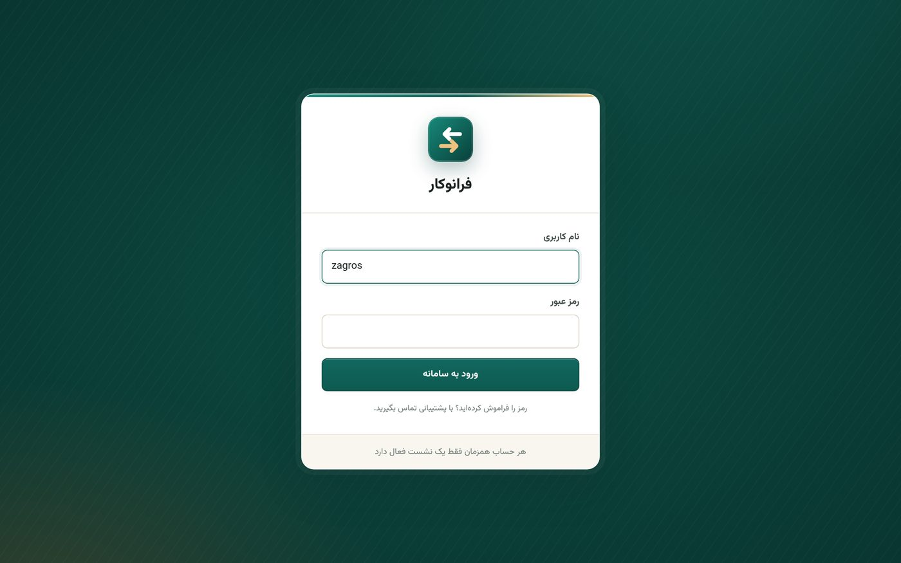
صفحهی ورود
قوانین ورود
بار اول سامانه از شما میخواهد رمز را عوض کنید. تا عوض نکنید، بقیهی بخشها باز نمیشود. رمز جدید حداقل ۸ کاراکتر است.
هر حساب فقط یک نشست فعال دارد. اگر از دستگاه دوم وارد شوید، دستگاه اول خارج میشود.
بعد از ۵ بار رمز اشتباه، حساب ۱۵ دقیقه قفل میشود. رمز را فراموش کردهاید؟ به پشتیبانی پیام بدهید؛ بازیابی خودکار ندارد.
بعد از ۱۲ ساعت، نشست تمام میشود و دوباره وارد میشوید.
منو
در کامپیوتر منو سمت راست همیشه باز است. در گوشی با دکمهی ☰ بالای صفحه باز میشود. سه بخش اصلی — حواله، خودرو، ثبتنامی — هر کدام چهار زیرمنو دارند و ساختارشان یکی است: استعلام (دیدن آگهی دیگران)، ثبت آگهی، ثبت درخواست خرید، و آگهیهای من.
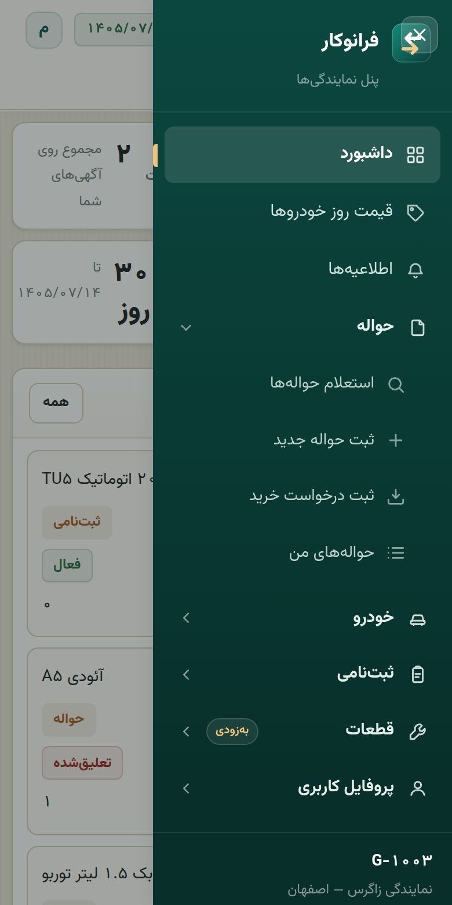
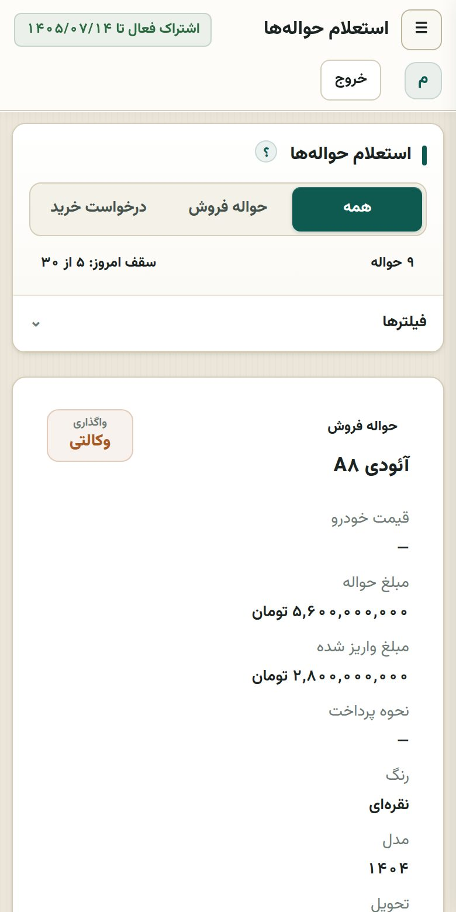
نمای گوشی: منوی بازشده، و صفحهی استعلام حوالهفصل ۲
داشبورد
اولین صفحه بعد از ورود. خلاصهی وضعیت شما در یک نگاه.
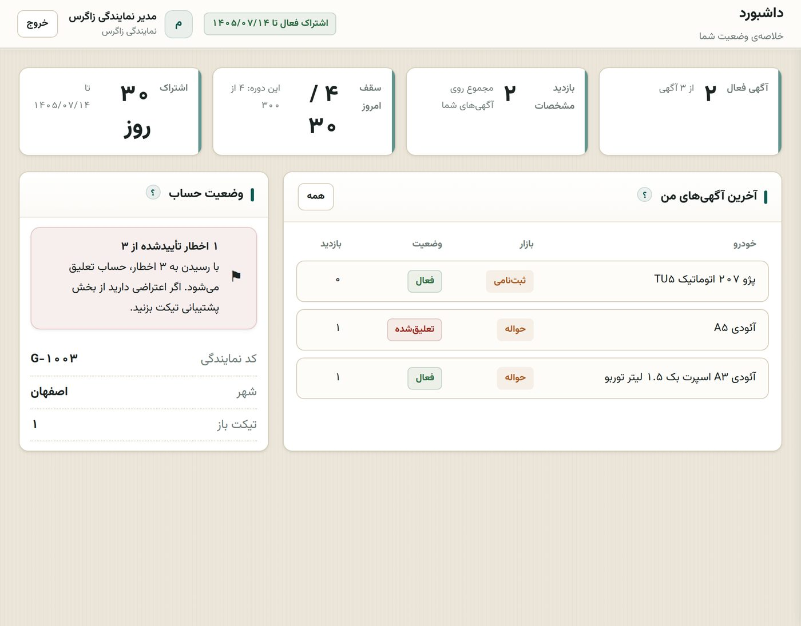
داشبورد نمایندگی
چهار کارت بالای صفحه
آگهی فعال — چند آگهی الان در استعلام دیگران دیده میشود.
بازدید مشخصات — چند بار دیگران مشخصات آگهیهای شما را باز کردهاند. فقط تعداد؛ اینکه چه کسی، نشان داده نمیشود.
سقف امروز — از سهمیهی روزانهی «نمایش مشخصات» چقدر مصرف کردهاید، و زیرش سهمیهی همین دوره.
اشتراک — چند روز از اشتراک مانده.
بخشهای پایین
آگهیهایی که باید تمدید شوند — آگهیهایی که مهلتشان تمام شده یا تا ۳ روز دیگر تمام میشود. با دکمهی «تمدید» همانجا برمیگردند.
آخرین آگهیهای من — شش آگهی آخر شما در همهی بازارها.
وضعیت حساب — اگر اخطاری روی حساب باشد، اینجا قرمز میشود و تعدادش را میگوید. (فصل ۴)
فصل ۳
قیمت روز خودروها
قیمت بازار خودروهای صفر کیلومتر، به تفکیک شرکت و مدل. هر ۱۵ دقیقه خودکار بهروز میشود.
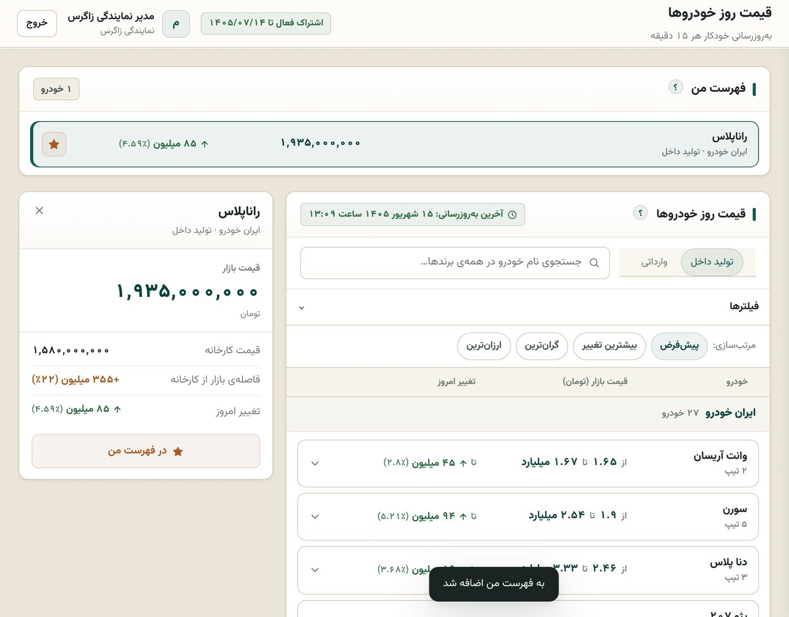
فهرست قیمت با یک خودرو ستارهخورده و پنل جزئیات آن
چطور استفاده کنیم
بالای فهرست، تولید داخل یا وارداتی را انتخاب کنید.
نام خودرو را در جعبهی جستوجو بنویسید؛ همان لحظه فیلتر میشود.
هر ردیف یک مدل است و بازهی قیمت تیپهایش را نشان میدهد. روی ردیف بزنید تا تیپها باز شوند.
روی هر تیپ بزنید تا پنل کناری باز شود: قیمت بازار، قیمت کارخانه، فاصلهی این دو، و تغییر امروز.
با ستاره، خودرو به «فهرست من» بالای صفحه میرود تا هر بار سریع پیدایش کنید.
نکتهها
تاریخ سبزِ «آخرین بهروزرسانی» تاریخِ خودِ فهرست منبع است. اگر نارنجی شد، یعنی بیش از ۳ ساعت بهروز نشده؛ ارقام همچنان آخرین قیمت معتبر هستند.
«فهرست من» فقط برای همین حساب است و تا ۳۰ خودرو جا دارد.
قیمتها برای خودروی صفر، آخرین مدل و ارزانترین رنگ بازار است و به میلیون گرد شدهاند.
این صفحه با اشتراک منقضی هم باز میشود.
فصل ۴
اطلاعیهها و اخطارها
هر تصمیمی که دربارهی حساب یا آگهیهای شما گرفته شود، اینجا با دلیلش نوشته میشود. عدد کنار منو یعنی اطلاعیهی نخوانده دارید.
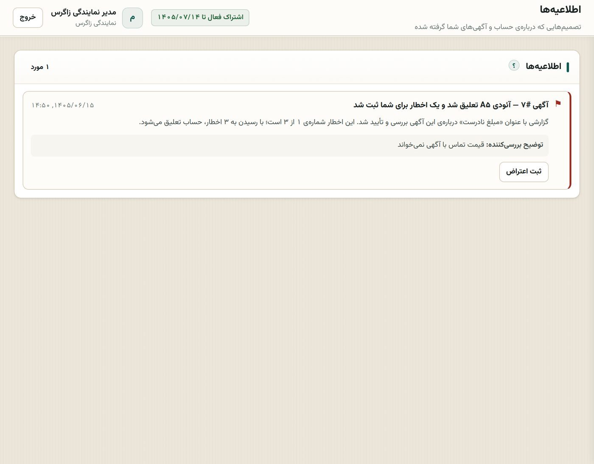
یک اخطار تأییدشده، با توضیح بررسیکننده و دکمهی اعتراض
چه چیزهایی اینجا میآید
آگهی شما گزارش شده و گزارش تأیید شده → آگهی تعلیق میشود و یک اخطار ثبت میشود.
آگهی شما توسط مدیریت تعلیق شده، با دلیل.
نتیجهی گزارشی که خودتان دادهاید: تأیید شد / تأیید نشد / بیمورد بود.
آگهیای که مشخصاتش را باز کرده بودید، بعد از آن ویرایش شده.
قانون اخطار — سه اخطار، تعلیق حساب
هر گزارشِ تأییدشده روی آگهی شما = یک اخطار. با اخطار سوم حساب تعلیق میشود.
گزارشِ بیمورد هم اخطار دارد — برای گزارشدهنده. گزارش، ابزار بازی با رقیب نیست.
حساب تعلیقشده میتواند وارد شود و آگهیها را ببیند، ولی نمیتواند آگهی بزند، مشخصات باز کند یا گزارش بدهد. آگهیهایش هم از استعلام دیگران حذف میشود.
هر اخطار با پیامک هم اطلاع داده میشود.
اعتراض دارید؟ دکمهی «ثبت اعتراض» یک گفتگوی پشتیبانی با موضوع همان تصمیم باز میکند. توضیح بدهید و مدرک بگذارید.
فصل ۵
حواله — استعلام و نمایش مشخصات
«استعلام حوالهها» همهی حوالههای فروش و درخواستهای خرید نمایندگیهای دیگر را نشان میدهد.
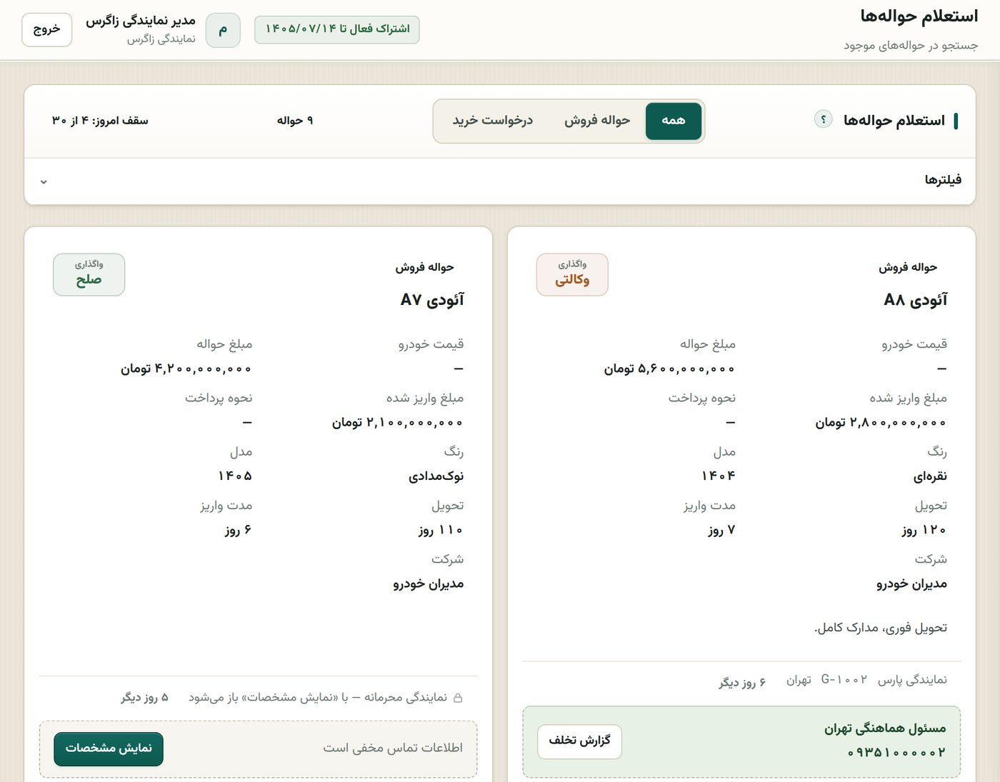
کارت راست: مشخصات باز شده. کارت چپ: هنوز پنهان است.
خواندن یک کارت
بالای کارت: حواله فروش یا درخواست خرید، مدل خودرو، و نوع واگذاری (صلح / وکالتی).
وسط کارت: مبلغ حواله، مبلغ واریزشده، قیمت خودرو، نحوه پرداخت، رنگ، سال، تحویل، مدت واریز، شرکت. اینها برای همه دیده میشود.
پایین کارت: نام نمایندگی، شهر، توضیحات و شماره تماس پنهان است تا «نمایش مشخصات» را بزنید.
فیلترها
سه تب بالای صفحه (همه / حواله فروش / درخواست خرید) و زیرش ردیف «فیلترها»: برند و مدل، رنگ، واگذاری، حداکثر روز تحویل، حداکثر مبلغ.
نمایش مشخصات
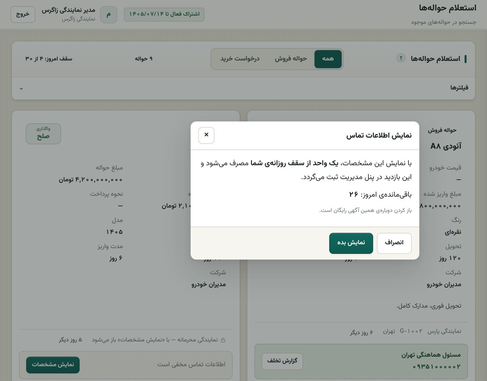
قبل از مصرف سهمیه، تأیید میگیرد و باقیماندهی امروز را میگوید
قوانین نمایش مشخصات
هر بار یک واحد از سقف روزانه مصرف میشود. سقف پیشفرض ۳۰ در روز و ۳۰۰ در هر دورهی اشتراک است و بین هر سه بازار مشترک است.
باز کردن دوبارهی همان آگهی رایگان است.
هر نمایش در پنل مدیریت ثبت میشود. صاحب آگهی فقط تعداد بازدید را میبیند، نه اینکه چه کسی.
با اشتراک منقضی، دکمه کار نمیکند.
گزارش تخلف
بعد از باز شدن مشخصات، دکمهی «گزارش تخلف» ظاهر میشود. دلیل را انتخاب کنید (آگهی جعلی، مبلغ نادرست، عدم پاسخگویی، قبلاً فروخته شده، کلاهبرداری، اطلاعات تماس در متن، سایر) و حداقل ۲۰ کاراکتر توضیح بنویسید. برای «عدم پاسخگویی» باید قبلاً مشخصات را باز کرده باشید. هر نمایندگی روزی حداکثر ۵ گزارش میتواند بدهد و هر آگهی را یک بار.
فصل ۶
حواله — ثبت آگهی و مدیریت آن
ثبت حواله جدید (فروش)
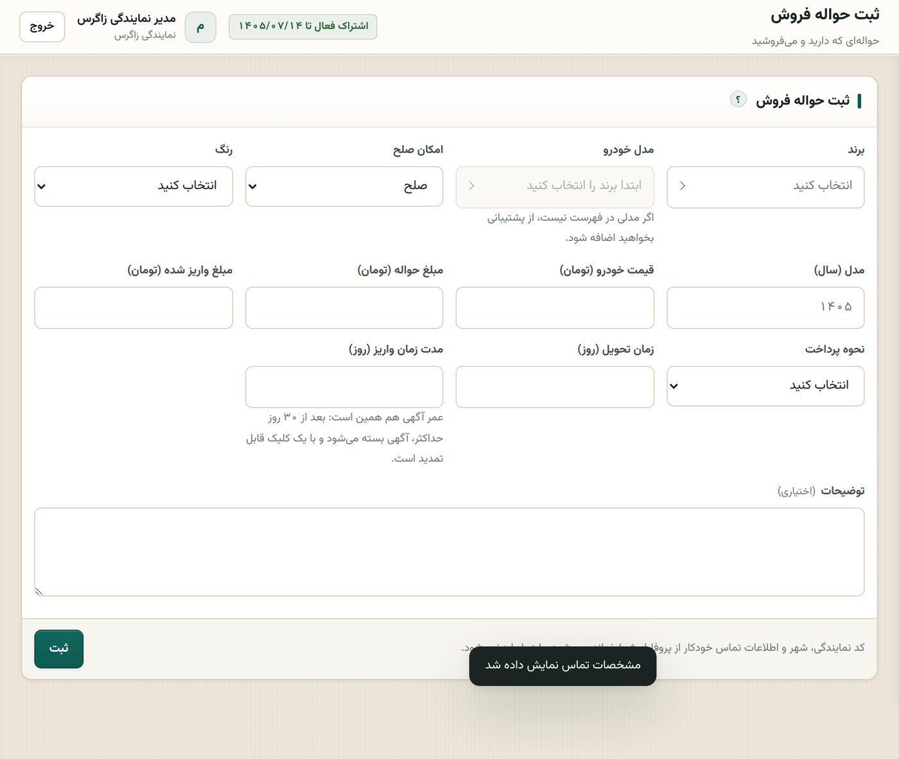
فرم ثبت حوالهی فروش
برند، سپس مدل را از فهرست انتخاب کنید. مدل تایپ نمیشود؛ اگر در فهرست نیست، از پشتیبانی بخواهید اضافه شود.
امکان صلح، رنگ، و مدل (سال) را بدهید.
سه مبلغ را جدا بنویسید: قیمت خودرو، مبلغ حواله (چیزی که میفروشید)، مبلغ واریزشده (نمیتواند از مبلغ حواله بیشتر باشد).
نحوه پرداخت (نقد / چند مرحلهای / اقساط)، زمان تحویل، و مدت زمان واریز (۱ تا ۳۰ روز).
توضیحات اختیاری است. دکمهی «ثبت».
قوانین حواله
عمر آگهی فروش = مدت زمان واریز (حداکثر ۳۰ روز). بعد از آن بسته میشود و با یک کلیک قابل تمدید است.
درخواست خرید همیشه ۷ روز فعال میماند و فقط مدل خودرو در آن اجباری است.
حوالهی فروش فقط برای برندهایی که برای حساب شما تعیین شده قابل ثبت است. درخواست خرید محدودیت برند ندارد.
کد نمایندگی، شهر و شماره تماس خودکار از پروفایل میآید؛ در فرم نیست و در متن هم نباید نوشته شود.
حوالههای من
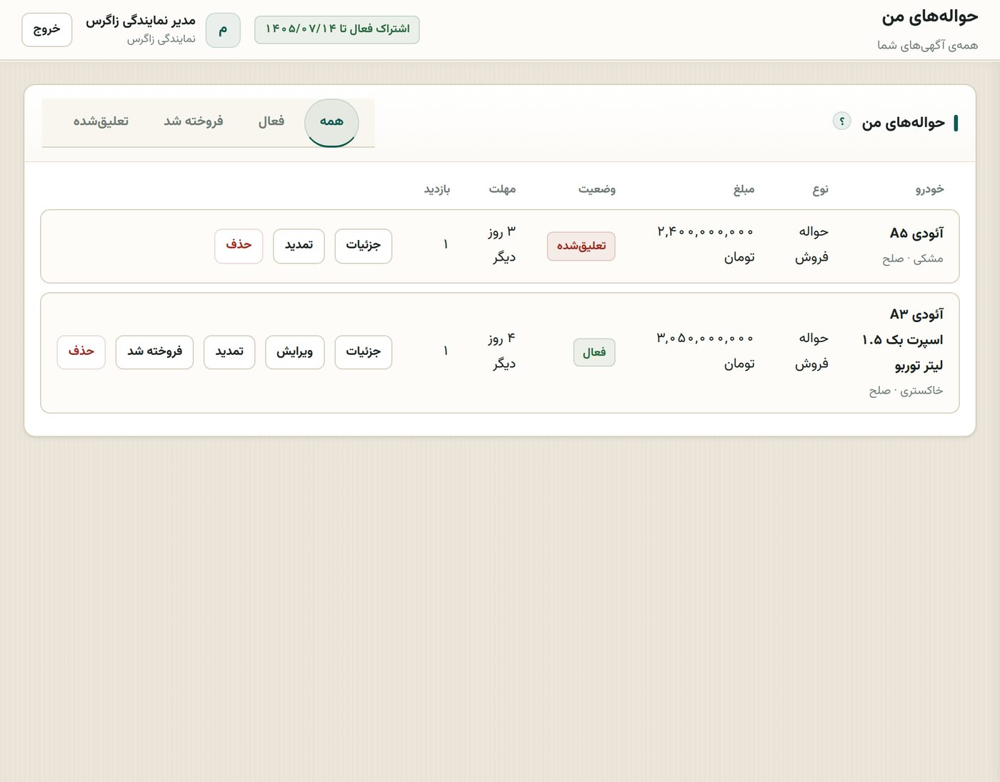
فهرست آگهیهای خودتان با دکمههای مدیریت
ویرایش — همهچیز بهجز مدل خودرو و نوع آگهی قابل تغییر است. آگهی برچسب «ویرایششده» میگیرد و کسانی که قبلاً مشخصاتش را باز کردهاند، اطلاع میگیرند.
تمدید — زمان تحویل و مدت واریز را دوباره میپرسد و مهلت از امروز شروع میشود.
فروخته شد — آگهی از استعلام دیگران برداشته میشود.
حذف — آگهی برداشته میشود ولی سابقهی بازدید و گزارشهایش تا ۳۰ روز در پنل مدیریت میماند. حذف، راه فرار از گزارش نیست.
فصل ۷
خودرو — استعلام
خودروهای فروشی و درخواستهای خرید. برخلاف حواله، این بازار محدودیت برند ندارد: هر خودرویی را میشود گذاشت و خواست.
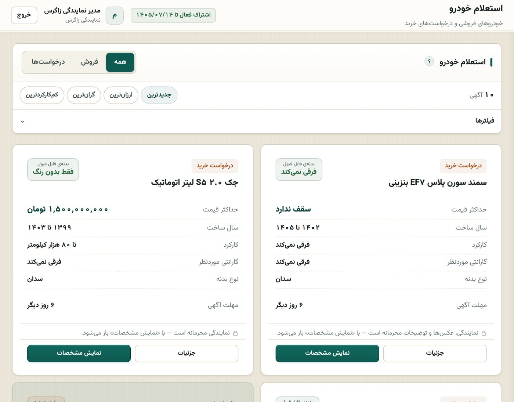
کارت خودرو: قیمت، سال، کارکرد، رنگ، نوع بدنه و وضعیت بدنه برای همه دیده میشود
ردیف «فیلترها»: برند و مدل، سال ساخت از/تا، قیمت از/تا، حداکثر کارکرد، نوع بدنه (چند انتخاب)، وضعیت بدنه (چند انتخاب)، فقط گارانتی فعال.
دکمهی «جزئیات» کارت را کامل باز میکند.
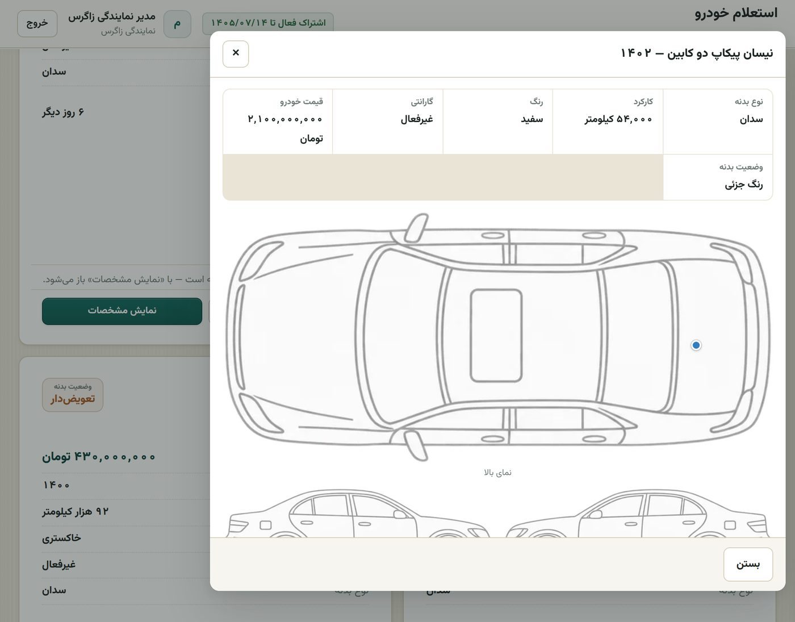
پنجرهی جزئیات یک خودروی فروشی؛ عکسها و توضیحات فروشنده پشت «نمایش مشخصات» است
چه چیزی پنهان است
نام نمایندگی و تماس (مثل بقیهی بازارها)، بهعلاوهی عکسهای خودرو و توضیحات فروشنده. روی شیشه میشود شماره نوشت؛ پس عکس هم پشت نمایش مشخصات است.
وضعیت بدنه و درجهی آن (بدون رنگ / رنگ جزئی / رنگشده / تعویضدار / شاسیخورده) برای همه باز است، چون در آن جای شماره نوشتن نیست.
فصل ۸
خودرو — ثبت آگهی فروش و وضعیت بدنه
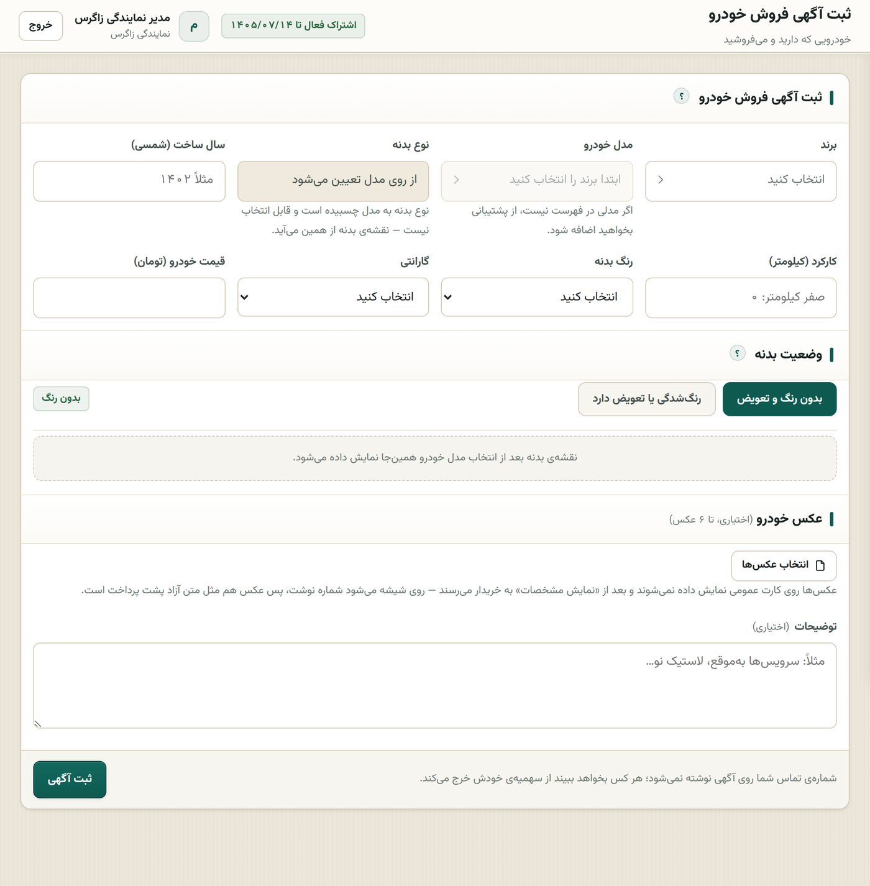
فرم ثبت آگهی فروش خودرو
برند و مدل را انتخاب کنید. نوع بدنه خودش از روی مدل پر میشود و قابل تغییر نیست.
سال ساخت (شمسی)، کارکرد به کیلومتر، رنگ بدنه، گارانتی (فعال / غیرفعال)، قیمت خودرو.
وضعیت بدنه: اگر خودرو سالم است «بدون رنگ و تعویض». اگر نه، «رنگشدگی یا تعویض دارد» را بزنید و قطعهها را علامت بزنید (پایین همین صفحه).
عکس (اختیاری، تا ۶ عکس) و توضیحات. «ثبت آگهی».
علامت زدن وضعیت بدنه
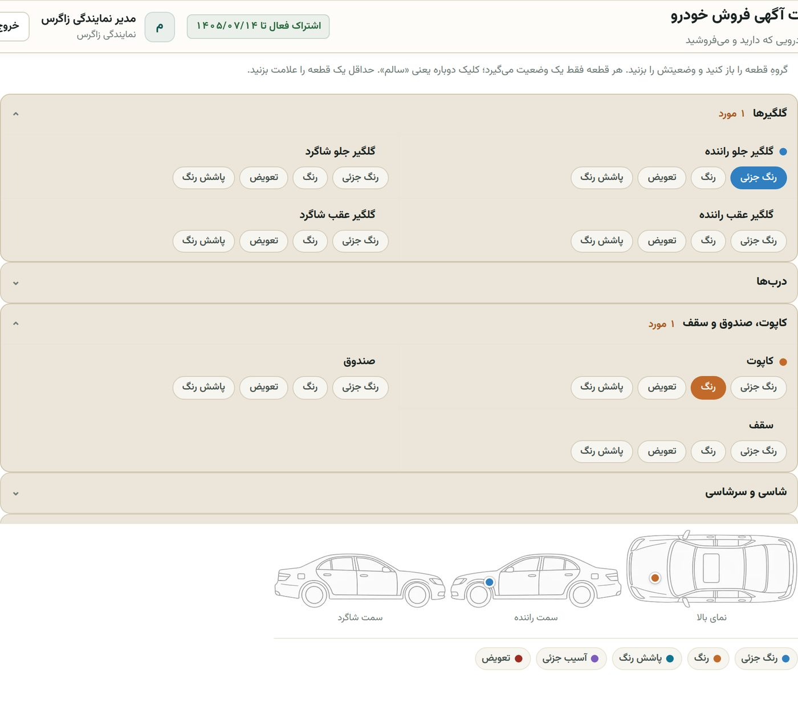
قطعهها در پنج گروه؛ هر قطعه یک وضعیت میگیرد و روی نقشه رنگی میشود
گروهها: گلگیرها، دربها، کاپوت و صندوق و سقف، شاسی و سرشاسی، پالونی و سینی. گروه را باز کنید و برای هر قطعه یکی از وضعیتها را بزنید: رنگ جزئی، رنگ، پاشش رنگ، تعویض، آسیب جزئی (فقط شاسی).
کلیک دوباره روی همان وضعیت یعنی «سالم».
درجهی بدنه را سامانه خودش حساب میکند — بدترین قطعه تعیینکننده است. آسیب یا رنگ روی شاسی = «شاسیخورده».
اگر «رنگشدگی دارد» را زدهاید ولی هیچ قطعهای علامت نخورده، فرم ثبت نمیشود.
قوانین آگهی خودرو
عمر آگهی ۷ روز است (فروش و درخواست هر دو)، قابل تمدید.
عکس: حداکثر ۶ عدد، هر کدام تا ۵ مگابایت، فرمت JPG / PNG / WebP. عکسها فقط بعد از «نمایش مشخصات» به خریدار میرسند.
سال ساخت نمیتواند از سال آینده جلوتر باشد.
در ویرایش، مدل و نوع بدنه ثابت میماند؛ بقیه قابل تغییر است. اضافه یا کم کردن عکس هم ویرایش حساب میشود.
فصل ۹
خودرو — درخواست خرید و خودروهای من
ثبت درخواست خرید
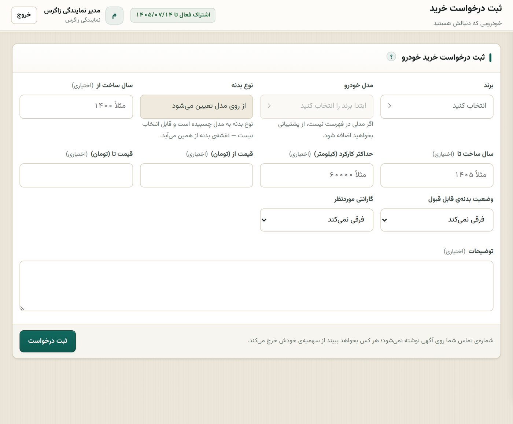
فرم درخواست خرید خودرو — همهی فیلدها اختیاری است
فقط مدل را انتخاب کنید و هر چه بازه میخواهید: سال از/تا، حداکثر کارکرد، قیمت از/تا، بدنهی قابل قبول (فقط بدون رنگ / تا رنگ جزئی / فرقی نمیکند) و گارانتی موردنظر (فعال / غیرفعال / فرقی نمیکند). خالی گذاشتن یعنی «فرقی نمیکند».
خودروهای من
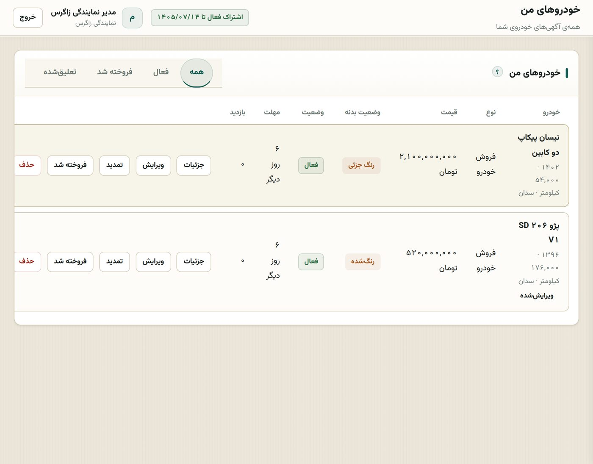
آگهیهای خودرویی خودتان
همان دکمههای بازار حواله: جزئیات، ویرایش، ویرایش عکسها، تمدید، فروخته شد، حذف. ستون «بازدید» تعداد دفعاتی است که مشخصات شما باز شده.
فصل ۱۰
ثبتنامی
بازار ظرفیتهای ثبتنام کارخانه. یک طرف «ظرفیت» را اعلام میکند و طرف دیگر «درخواست» میدهد.
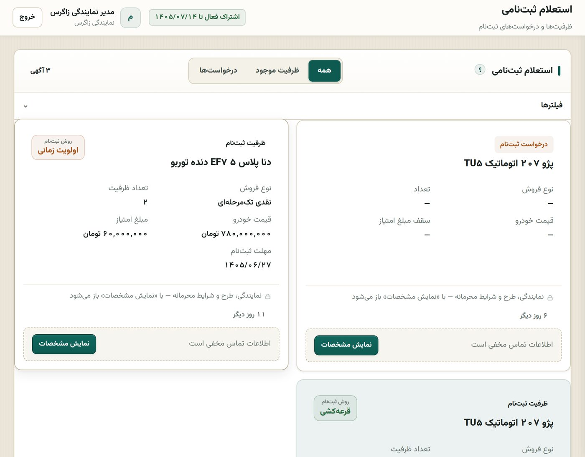
استعلام ثبتنامی: ظرفیتهای موجود و درخواستها
اعلام ظرفیت ثبتنام
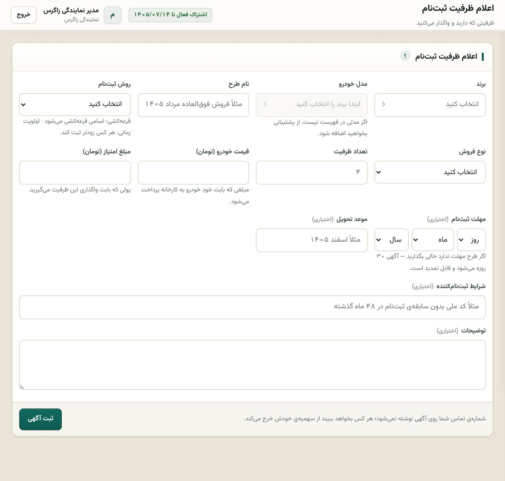
فرم اعلام ظرفیت
برند و مدل، سپس نام طرح (مثلاً «فروش فوقالعاده مرداد ۱۴۰۵»).
روش ثبتنام: قرعهکشی یا اولویت زمانی. نوع فروش: پیشفروش، نقدی تکمرحلهای، نقدی چند مرحلهای، اقساط، مشارکت در تولید.
تعداد ظرفیت (۱ تا ۵۰۰).
دو مبلغ جدا: قیمت خودرو = پولی که به کارخانه داده میشود · مبلغ امتیاز = پولی که شما بابت واگذاری این ظرفیت میگیرید. این دو را با هم قاطی نکنید.
عمر «اعلام ظرفیت» تا مهلت ثبتنام طرح است، حداکثر ۳۰ روز. اگر مهلت ندهید، ۳۰ روز.
«درخواست ثبتنام» ۷ روز فعال میماند و فقط مدل خودرو در آن اجباری است.
نام طرح، شرایط، موعد تحویل و توضیحات همگی پشت «نمایش مشخصات» هستند و در آنها هم نباید شماره یا نام نمایندگی نوشت. کلمهی «نمایندگی» در نام طرح پذیرفته نمیشود.
اعلام ظرفیت فقط برای برندهای مجاز حساب شما؛ درخواست محدودیت ندارد.
«ثبتنامیهای من» مثل دو بازار دیگر است: ویرایش، تمدید، «واگذار شد»، حذف.
فصل ۱۱
تنظیمات حساب و اشتراک
تنظیمات حساب
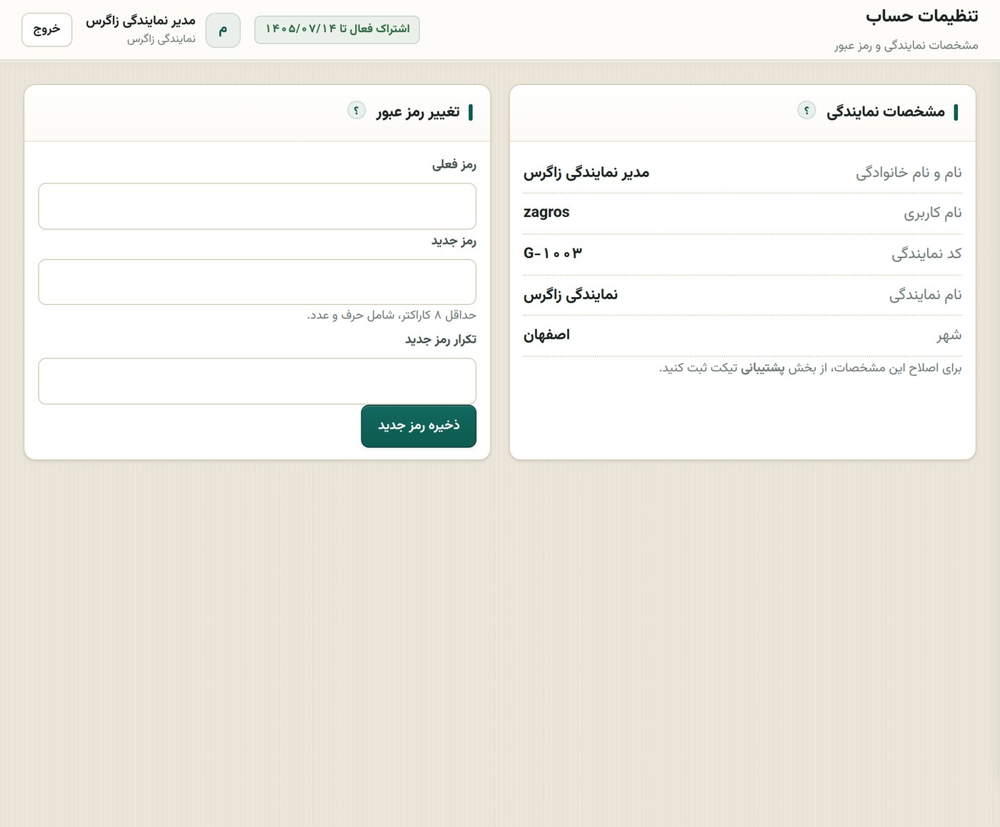
پروفایل: مشخصات ثابت، و فرم تغییر رمز
از این صفحه فقط رمز را میتوانید عوض کنید. نام، کد نمایندگی، نام نمایندگی و شهر روی همهی آگهیهای شما ثبت میشود و از اینجا قابل تغییر نیست؛ برای اصلاح، از پشتیبانی تیکت بزنید. با تغییر رمز، نشستهای باز روی دستگاههای دیگر بسته میشود.
اشتراک من
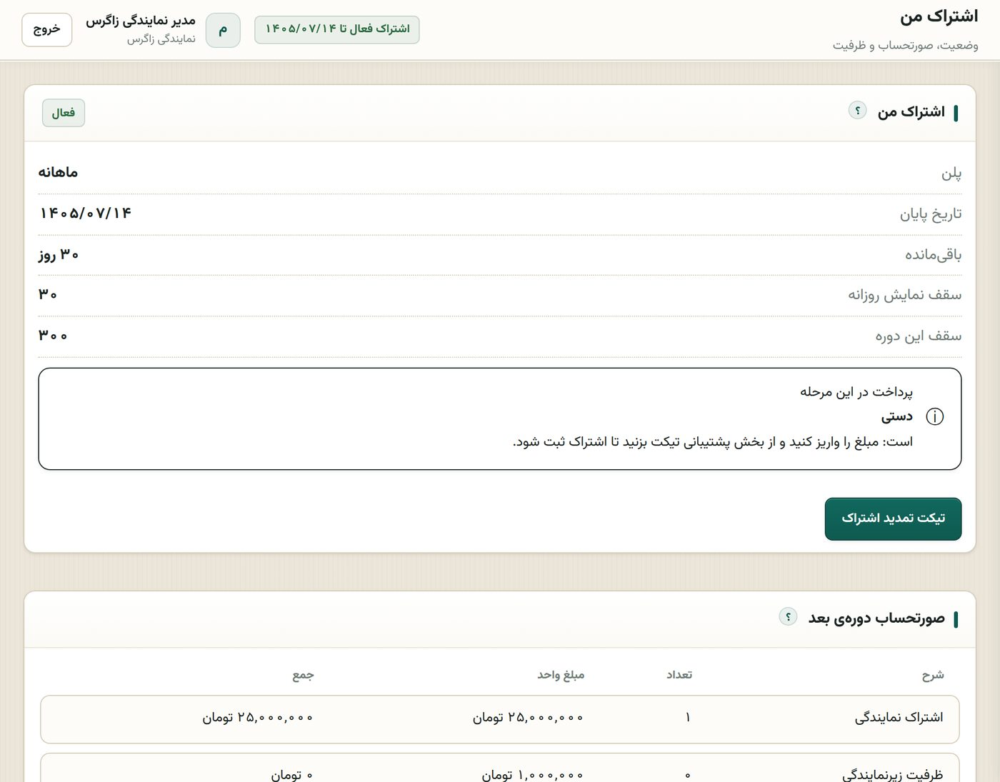
وضعیت اشتراک، سقفها، و صورتحساب دورهی بعد
اشتراک چه میدهد و بدون آن چه میشود
اشتراک یعنی مدت (مثلاً ۳۰ روز) و سهمیهی نمایش مشخصات (روزانه و دورهای). سقف تعداد آگهی ندارد.
وقتی تمام شود: همچنان وارد میشوید و آگهیهای هر سه بازار را میبینید، ولی مشخصات تماس پنهان میماند و ثبت آگهی، ویرایش، تمدید، نمایش مشخصات و گزارش تخلف بسته است.
پشتیبانی، اطلاعیهها و قیمت روز با اشتراک منقضی هم باز است.
تمدید: مبلغ را واریز کنید و با دکمهی «تیکت تمدید اشتراک» رسید را بفرستید. تمدید از روز ثبت شروع میشود، نه از تاریخ انقضا؛ روزهای وقفه حساب نمیشود.
فصل ۱۲
زیرنمایندگیها
این بخش فقط برای نمایندگیهای مرکزی که «حالت ماژول» دارند در منو ظاهر میشود. با آن برای شعبههایتان حساب جدا میسازید.
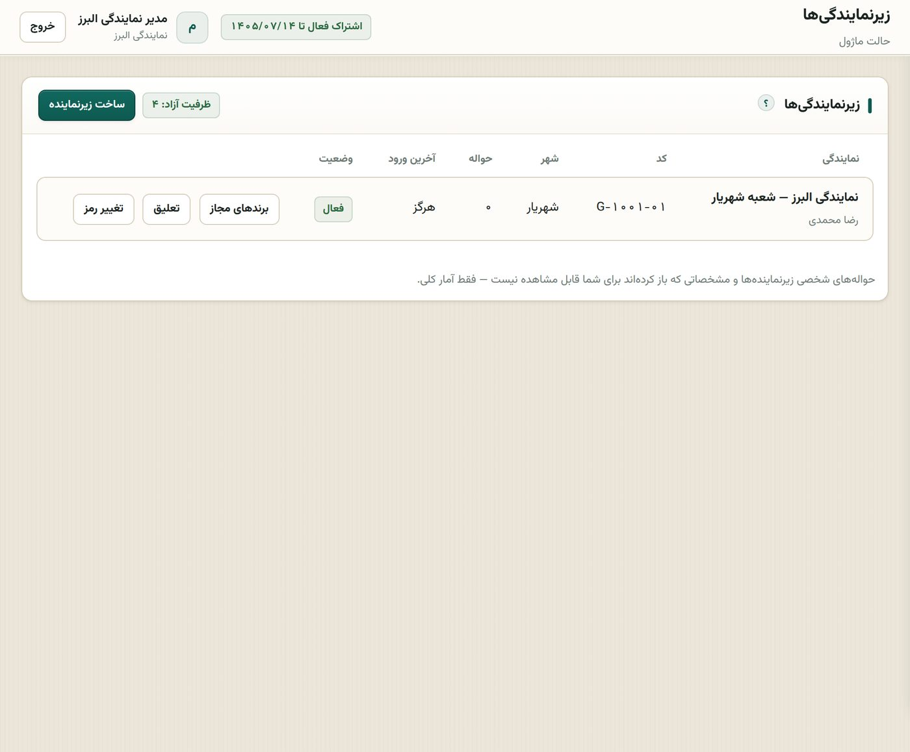
فهرست شعبهها با دکمههای مدیریت
ساخت شعبه
باید ظرفیت آزاد داشته باشید (عدد بالای صفحه). ظرفیت پیشخرید میشود: «خرید ظرفیت»، پیوست فیش واریزی، تأیید مدیریت.
«ساخت زیرنماینده»: نام کاربری، رمز اولیه، نام مدیر، موبایل، نام نمایندگی، شهر، مسئول هماهنگی و موبایلش.
کد شعبه خودکار از کد شما ساخته میشود (مثلاً G-1001 → G-1001-01). شعبه در اولین ورود باید رمزش را عوض کند.
مدیریت شعبه
برندهای مجاز — شعبه میتواند زیرمجموعهای از برندهای شما را داشته باشد. تغییر فوری اعمال میشود و فقط جلوی ثبتِ جدید را میگیرد.
تعلیق / فعالسازی — تعلیق، شعبه را همان لحظه خارج میکند. ظرفیتش تا پایان دوره آزاد نمیشود.
تغییر رمز — رمز جدید بگذارید؛ شعبه در ورود بعدی آن را عوض میکند.
چه چیزی مشترک است و چه چیزی جدا
اشتراک مشترک است: تمدید شما همان لحظه شعبهها را هم پوشش میدهد؛ تمام شدنش هم همه را میگیرد.
سهمیهی نمایش مشخصات جداست: هر حساب سهمیهی خودش را دارد.
آگهیها جداست ولی شما آگهیهای شعبهها را در «آگهیهای من» با فیلتر «زیرشاخهها» میبینید؛ نمیتوانید ویرایش یا حذفشان کنید.
اینکه شعبه مشخصات چه کسانی را باز کرده، برای شما دیده نمیشود؛ فقط آمار کلی.
شعبه صفحهی «اشتراک من» ندارد و نمیتواند شعبه بسازد.
فصل ۱۳
پشتیبانی
هر سؤال، مشکل یا درخواستی از اینجا مطرح میشود. پاسخ در همین صفحه میآید.
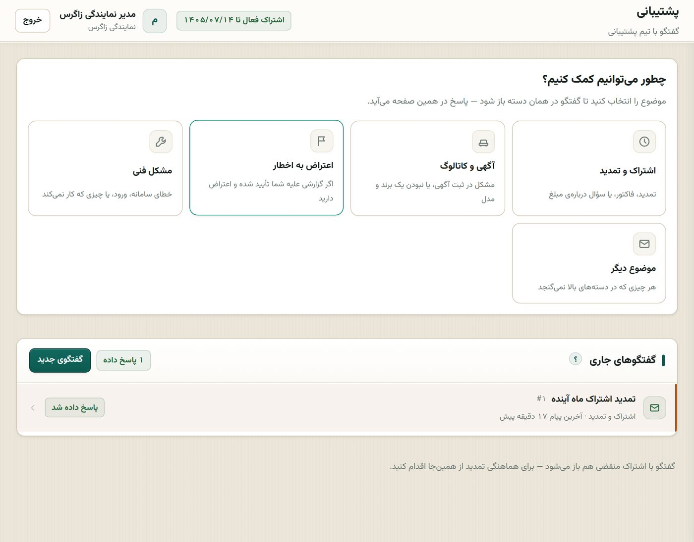
انتخاب موضوع، و فهرست گفتگوهای جاری
موضوع را انتخاب کنید: اشتراک و تمدید · ظرفیت زیرنمایندگی · آگهی و کاتالوگ · اعتراض به اخطار · مشکل فنی · موضوع دیگر.
عنوان و شرح بنویسید. در صورت نیاز تا ۳ فایل (عکس یا PDF، هر کدام تا ۵ مگابایت) پیوست کنید — مثلاً فیش واریزی.
وقتی پاسخ بیاید، وضعیت گفتگو «پاسخ داده شد» میشود. میتوانید ادامه بدهید یا ببندید.
نکتهها
پشتیبانی با اشتراک منقضی و حتی حساب تعلیقشده هم باز است — برای همین راه تمدید و اعتراض از همینجاست.
گفتگوی بسته را نمیشود ادامه داد؛ گفتگوی جدید باز کنید.
مدلی در کاتالوگ نیست؟ موضوع «آگهی و کاتالوگ».
فصل ۱۴
قوانین در یک نگاه
عمر آگهیها
بازار
آگهی فروش / اعلام ظرفیت
درخواست خرید
حواله
به اندازهی «مدت زمان واریز» (۱ تا ۳۰ روز)
۷ روز
خودرو
۷ روز
۷ روز
ثبتنامی
تا مهلت ثبتنام طرح، حداکثر ۳۰ روز
۷ روز
همه با یک کلیک قابل تمدید هستند. آگهی با مهلت تمامشده در استعلام دیگران دیده نمیشود.
سهمیه و سقفها
مورد
مقدار
نمایش مشخصات (مشترک در هر سه بازار)
۳۰ در روز · ۳۰۰ در هر دورهی اشتراک
باز کردن دوبارهی همان آگهی
رایگان
گزارش تخلف
۵ در روز · هر آگهی یک بار · توضیح حداقل ۲۰ کاراکتر
عکس خودرو
تا ۶ عکس · هر کدام تا ۵ مگابایت · JPG / PNG / WebP
پیوست تیکت
تا ۳ فایل در هر پیام · عکس یا PDF · تا ۵ مگابایت
«فهرست من» در قیمت روز
۳۰ خودرو، مخصوص همین حساب
ورود
یک نشست فعال · ۵ رمز اشتباه = ۱۵ دقیقه قفل · نشست ۱۲ ساعته
اخطار و تعلیق
اتفاق
نتیجه
گزارش علیه آگهی شما تأیید شود
آگهی تعلیق + یک اخطار برای شما (پیامک میآید)
گزارش شما بیمورد تشخیص داده شود
یک اخطار برای خودِ شما
اخطار سوم
تعلیق حساب: ورود و دیدن آزاد، ثبت و نمایش مشخصات بسته، آگهیها از استعلام دیگران حذف
شماره تلفن (به هر شکلی، حتی با حروف)، آیدی با @، لینک و آدرس سایت، کد نمایندگی، و نام نمایندگی خودتان. سامانه اینها را همان لحظه رد میکند. نام پیامرسانها (تلگرام، واتساپ، ایتا و…) رد نمیشود ولی برای بررسی علامت میخورد. راه تماس، «نمایش مشخصات» است — همین قانون است که باعث میشود سهمیهی همه معنی داشته باشد.
اگر جایی از این راهنما با چیزی که روی صفحه میبینید فرق داشت، صفحه درست است و راهنما باید بهروز شود — لطفاً از پشتیبانی بگویید.